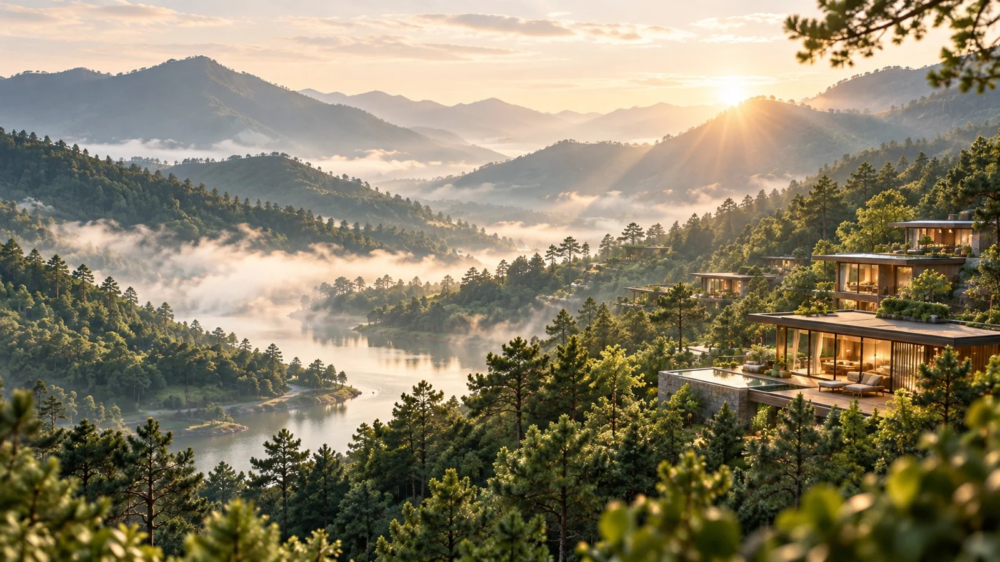
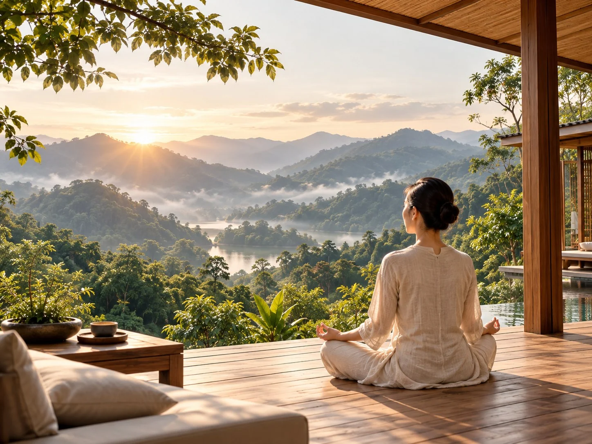
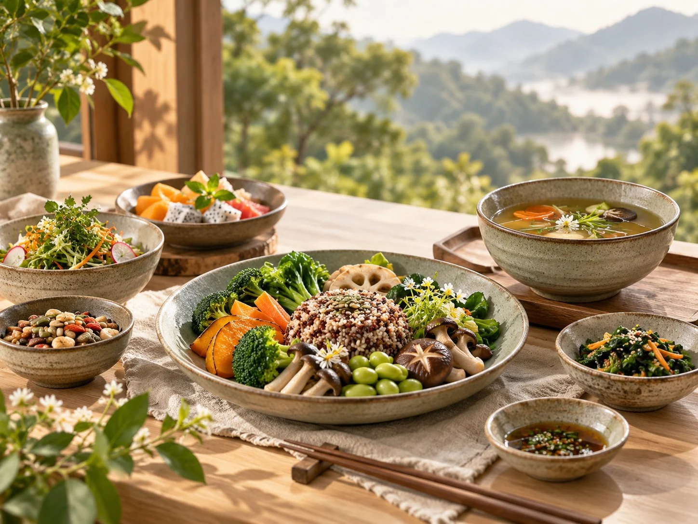
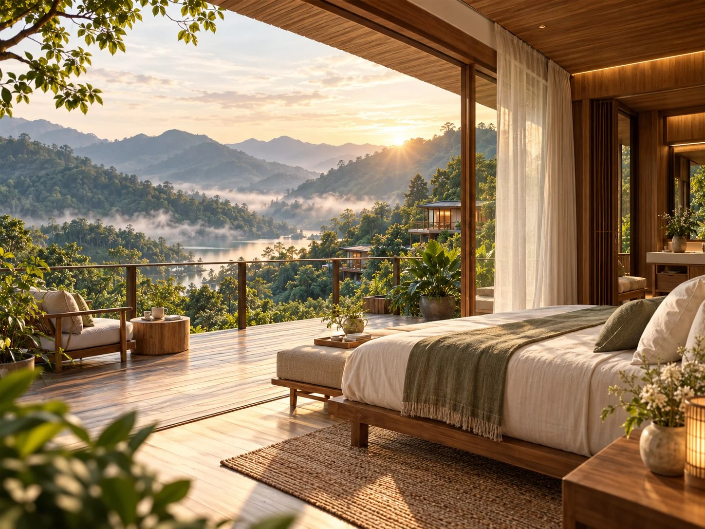
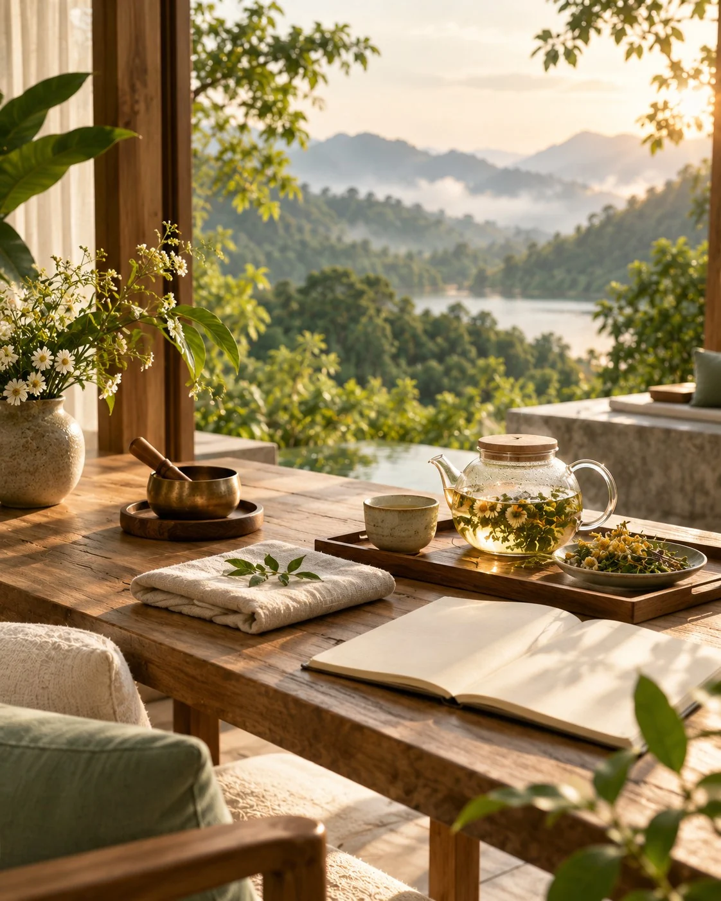

Chạm vào an yên, tái tạo thân tâm giữa thung lũng nguyên bản
Một kỳ nghỉ chậm giữa rừng thông, nơi mỗi ngày được dẫn dắt bằng thiền, vận động nhẹ, ẩm thực theo mùa và những khoảng lặng đủ dài để cơ thể trở về nhịp tự nhiên.

Bốn lớp nghỉ dưỡng
Không xếp kín lịch. Mỗi hoạt động có khoảng nghỉ xen giữa để nhịp thở, giấc ngủ và cảm giác đói no dần trở về trạng thái cân bằng.
Xem hành trình 3 ngày 2 đêm
Thiền chuông trước giờ ngủ
Kết thúc ngày bằng 30 phút thiền dẫn và âm thanh chuông trong không gian nhìn ra thung lũng.
Yoga phục hồi
Chuỗi chuyển động chậm tập trung vào hơi thở, vùng vai gáy, hông và cột sống; phù hợp cả người ít vận động.

Ẩm thực dưỡng sinh
Thực đơn thực dưỡng theo mùa thuần khiết, ưu tiên rau củ địa phương, ngũ cốc nguyên cám và phương pháp chế biến nhẹ.

Biệt thự Thung Lũng
Không gian gỗ mộc tách khỏi khu sinh hoạt chung, có ban công riêng hướng thung lũng và góc ngâm thảo mộc.

Trở lại đúng nhịp
Kỳ nghỉ được xây theo ba bước liên tiếp để cơ thể hạ nhịp trước, tái tạo sau và rời thung lũng với một thói quen đủ đơn giản để duy trì.
Xem lịch trình chi tiếtHạ nhịp
Ngày đầu giảm kích thích bằng đi bộ rừng, bữa tối nhẹ và thiền chuông trước giờ ngủ.
Tái tạo
Ngày thứ hai kết hợp yoga phục hồi, trị liệu thảo mộc và những khoảng nghỉ không thiết bị số.
Mang nhịp mới về nhà
Ngày cuối dành cho thực hành buổi sáng, ghi chú thói quen và một khung sinh hoạt cá nhân sau kỳ nghỉ.
Được phép chậm lại.
An Nhiên Valley giữ trải nghiệm đủ nhẹ và đủ riêng tư để khách không phải chạy theo một lịch trình chăm sóc dày đặc.
Tìm hiểu hành trình thanh lọcTĩnh trước khi đầy
Mỗi ngày luôn có khoảng trống giữa các hoạt động để cơ thể tự điều chỉnh thay vì liên tục nhận thêm kích thích.
Thuận theo mùa
Bữa ăn, thảo mộc và nhịp sinh hoạt được điều chỉnh theo khí hậu và nguồn nguyên liệu tại thời điểm lưu trú.